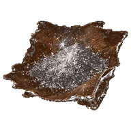
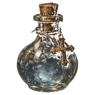
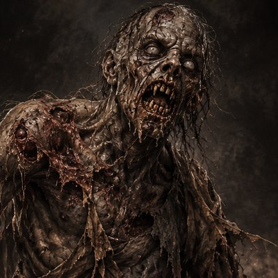
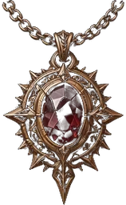
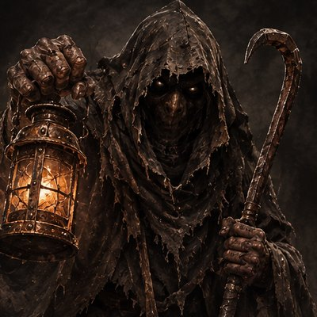

Expedition Katakomben · ohne Glut







Dein Weg 4 Stationen · 8 Std.
Kräuterfeld ~4 Zutaten · Schrein Segen für die Krypta · 1 Ereignis · Grabkammer sicheres Fundstück
Über die Gefahr: doppelte Beute dort, aber 1 von 3: die Hälfte geht verloren.
Planen statt Raten: Jede Station zeigt vorher, was sie bringt. Tippen auf eine Station legt den Weg fest (gold). Gefahr ist rot markiert und sagt, was sie kosten kann – kein unfairer Verlust. Die Karte ist je Ort und Tag anders.
Der sterbende Grabräuber

Zwischen zwei Särgen lehnt einer, der schneller war als du – und langsamer als das, was ihn erwischt hat. „Wasser“, sagt er. „Und ich sag dir, wo es liegt.“
Kein Warten in der Nacht: Der Held geht den Weg allein. Die „?“-Stationen hebt er auf und erzählt sie bei der Heimkehr – ein Tippen je Ereignis. Die Leiste oben zeigt, wo du auf dem Weg bist. Folgen stehen grob dabei (grün/rot), die genaue Wirkung bleibt ein wenig offen.
Heimgekehrt · Katakomben
Kräuterfeld: Silberstaub ×3, Grabmoos ×1
Schrein der Ilse: Segen – nächster Krypta-Kampf +10 % Leben
?Grabräuber: geholfen. „Unter dem dritten Sarg.“ −1 Rotwurz
Grabkammer: Knochenwacht (Amulett) + Versteck: Hexenhaar ×2
Beute
+214 Gold+702 EPSilberstaub ×3 Grabmoos ×1
Grabmoos ×1 Hexenhaar ×2
Hexenhaar ×2Geschichten der Katakomben: 3/6
Eigene Geschichte: Jede Station eine Zeile – was passiert ist und was es gebracht hat. Entscheidungen wirken weiter (Versteck in der Grabkammer, Segen in der Krypta, Omen). „Geschichten 3/6“ gibt einen Grund, andere Orte und Wege zu probieren.